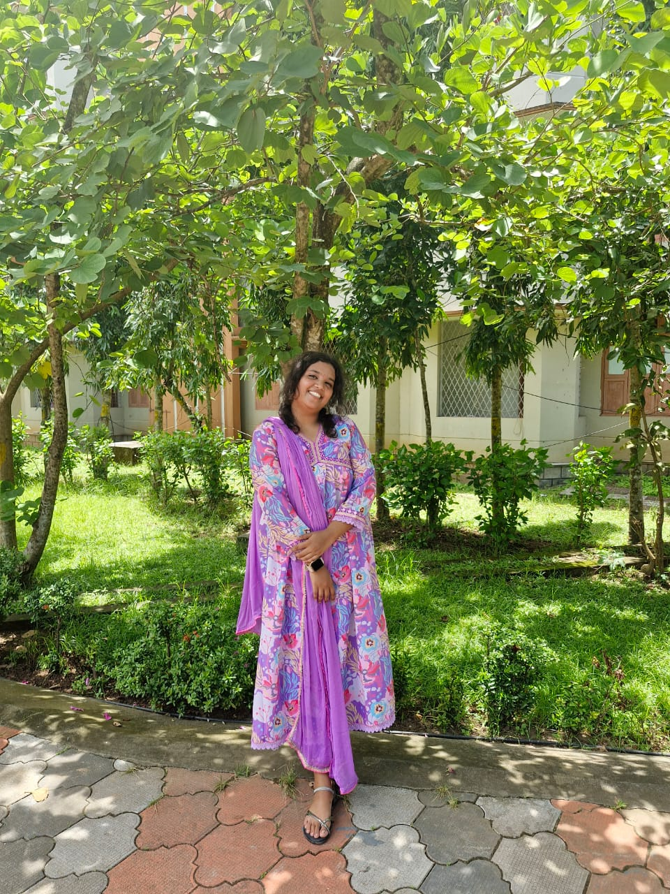

About me😁
As a curious and adventurous individual, I'm always on the lookout for new experiences that fuel my passions.
Whether I'm exploring the vibrant streets of a new city, sampling local cuisine that tantalizes my taste buds, or simply experimenting with new recipes in my own kitchen, I'm constantly seeking ways to nourish my body and soul.
From the spicy kick of Korean kimchi to the rich flavors of Italian pasta, I've developed a love for the diverse and ever-changing world of food.
When I'm not traveling or cooking, you can find me learning about
the latest technological advancements, practicing yoga, or simply enjoying a good book with a warm cup of coffee. Through my journey, I've come to realize that life is a delicious and ever-unfolding adventure, and I'm excited to see what the future holds
As I navigate the twists and turns of life, I've come to realize that it's the little moments that truly make it special.
Whether I'm savoring a perfectly brewed cup of coffee on a lazy Sunday morning, watching the sunset over a bustling city, or sharing laughter
and stories with loved ones, I believe that life is full of hidden gems waiting to be discovered. With a heart full of curiosity and a mind full of wonder, I'm always on the lookout for new experiences, new flavors, and new connections that will enrich my life and broaden my perspective.
And as I continue on this journey, I'm reminded that the best adventures are often the ones that unfold unexpectedly, and that the most delicious meals are always the ones shared with others.